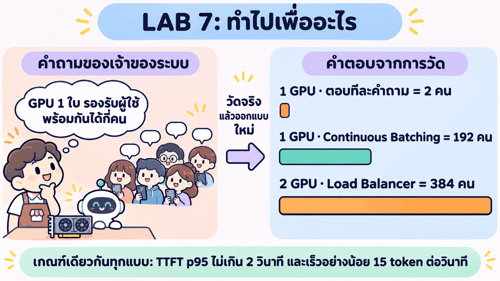
LAB 7 · แชทบอท LLM
ทั้งเรื่องในภาพเดียว: GPU 1 ใบรับได้ 192 คน และ 2 ใบหลัง Load Balancer รับได้ 384 คน
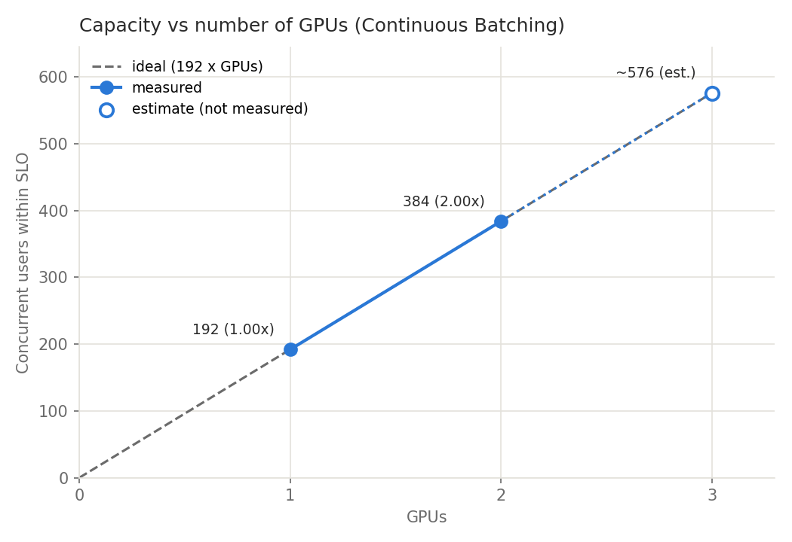
จุดทึบคือผลวัดจริง อยู่บนเส้นประ ideal พอดี (2.00 เท่า, Efficiency 100%) ส่วนจุดโปร่งที่ 3 ใบเป็นการคำนวณ ไม่ใช่ผลวัด
บทนี้มี 4 ส่วน เริ่มจากโจทย์ของร้าน และจบที่สกิลที่ใช้วัดซ้ำได้ในคำสั่งเดียว
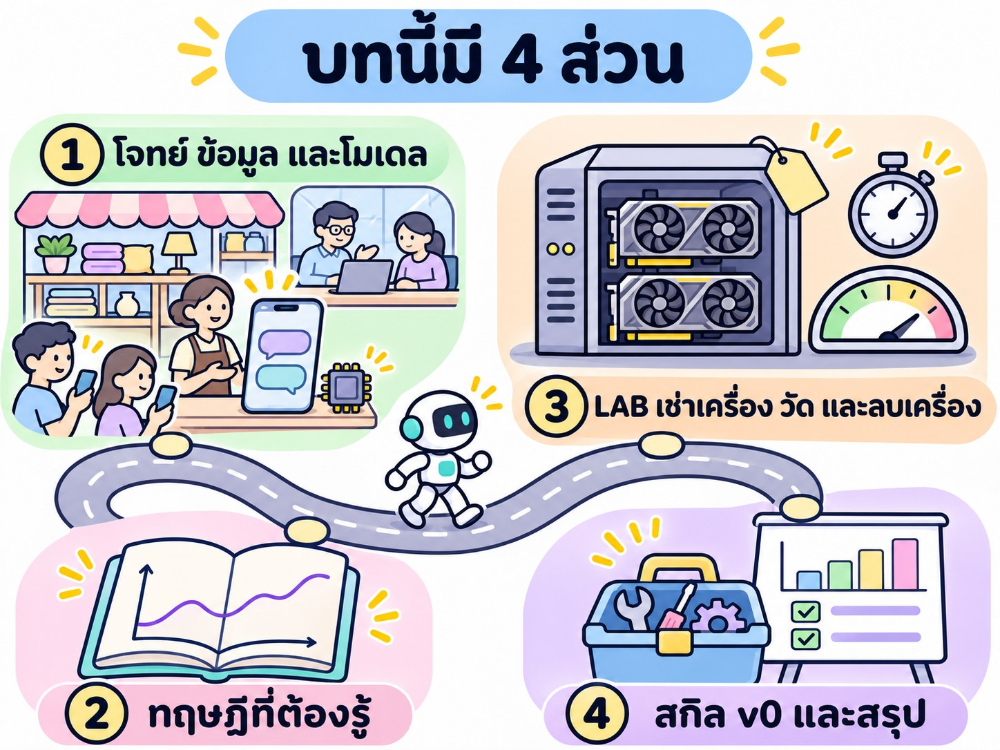
ส่วนที่ 3 คืองานหลักของ LAB (ขั้นที่ 1–7) และส่วนที่ 4 คือขั้นที่ 8–9 กับบทสรุป รายละเอียดเต็มอยู่ใน README.md
วิธีใช้สไลด์: ใช้แป้นลูกศรเปลี่ยนหน้า และใช้ปุ่มคัดลอกพรอมต์ของแต่ละขั้น
ปุ่มคัดลอกให้ข้อความเดียวกับ README.md ทุกตัวอักษร ช่องติ๊กของสไลด์ตรวจผลจำค่าไว้ในเบราว์เซอร์นี้ ควรเปิดสไลด์จากโฟลเดอร์ lab7_llm_chat เพื่อให้ลิงก์ไฟล์ทำงาน
โจทย์ ข้อมูล และโมเดล
คำถามของร้าน ชุดคำขอที่ใช้ทดสอบ และโมเดลกับโปรแกรมเสิร์ฟ
โจทย์ของร้าน: GPU 1 ใบ รองรับผู้ใช้พร้อมกันได้กี่คน
ร้านขายของใช้ในบ้านต้องการเปิดแชทบอทตอบลูกค้าด้วยงบเช่า GPU ที่จำกัด คำตอบในบทนี้ได้จากการวัดจริงบนเครื่องเช่า
วัดจริง 3 แบบ บนเครื่องเดียวกัน ด้วยเกณฑ์เดียวกัน
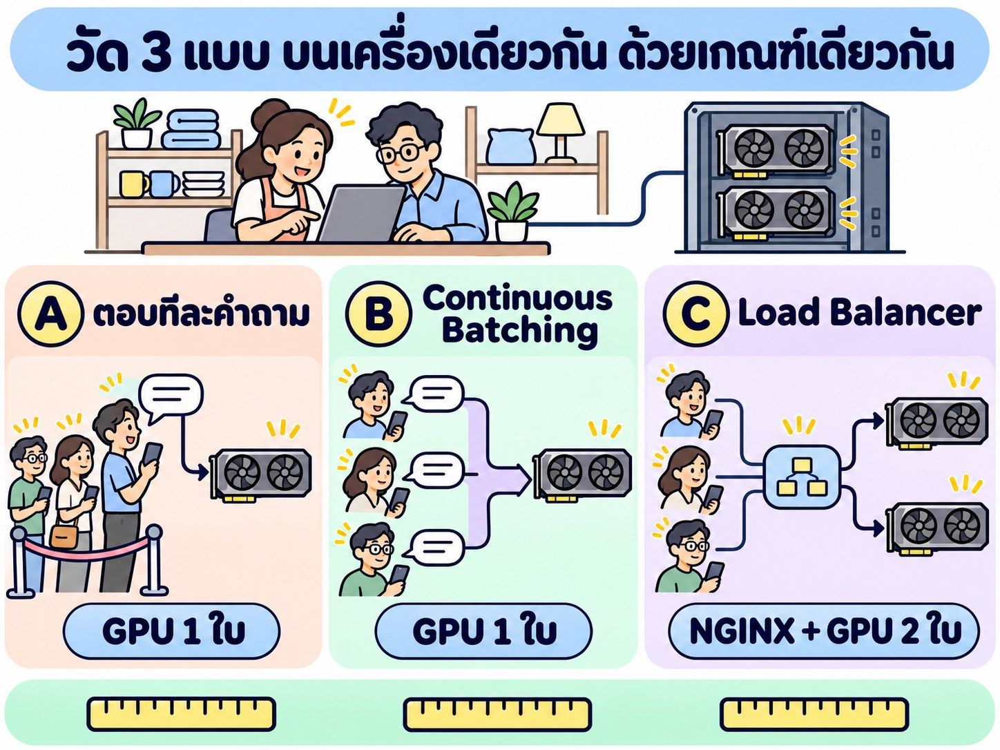
ข้อมูลที่ใช้ทดสอบคือชุดคำขอ 40 ข้อ ไม่ใช่ Dataset สาธารณะ
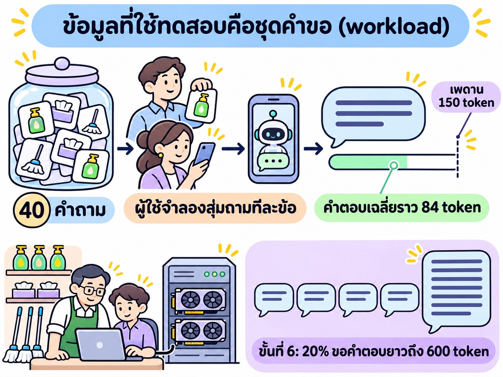
ตัวอย่างคำขอจริง: คำถามของลูกค้าคู่กับคำตอบของแชทบอท
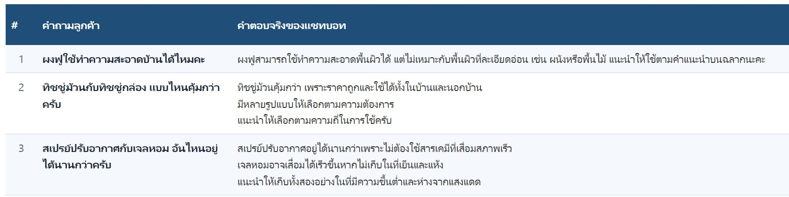
ส่วนหนึ่งของภาพจริง 3 ข้อจาก 8 ข้อ (คอลัมน์คำถามและคำตอบ) · token ขาเข้า / คำตอบ: 71 / 68, 86 / 69, 83 / 98 · TTFT 0.05 วินาที · เวลารวม 0.86, 0.85, 1.20 วินาที · ภาพเต็ม: results/dataset_samples.png ข้อมูลดิบ: results/dataset_samples.json
คำขอ 1 รายการคือ POST /v1/chat/completions ที่ส่งไปยัง NGINX พอร์ต 8000
messages มี 2 ส่วน: system กำหนดบทบาทพนักงานร้านให้ตอบภาษาไทย สุภาพ กระชับ ไม่เกิน 3 ประโยค และ user คือคำถาม 1 ข้อstream: true ส่งคำตอบกลับทีละ token จึงจับเวลา token แรกได้stream_options.include_usage: true ส่งจำนวน token มาตอนจบ ใช้คำนวณความเร็วตัวเลขความจุขึ้นกับความยาวคำตอบ
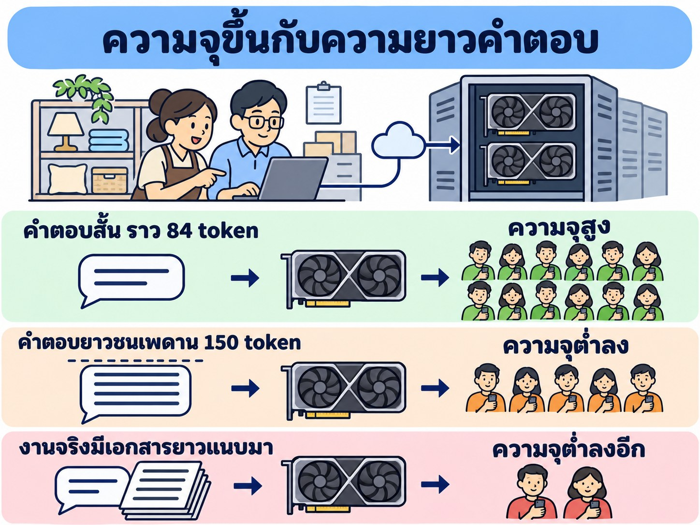
โมเดล Qwen3-4B-Instruct-2507 รับข้อความแชทและตอบออกมาทีละ token
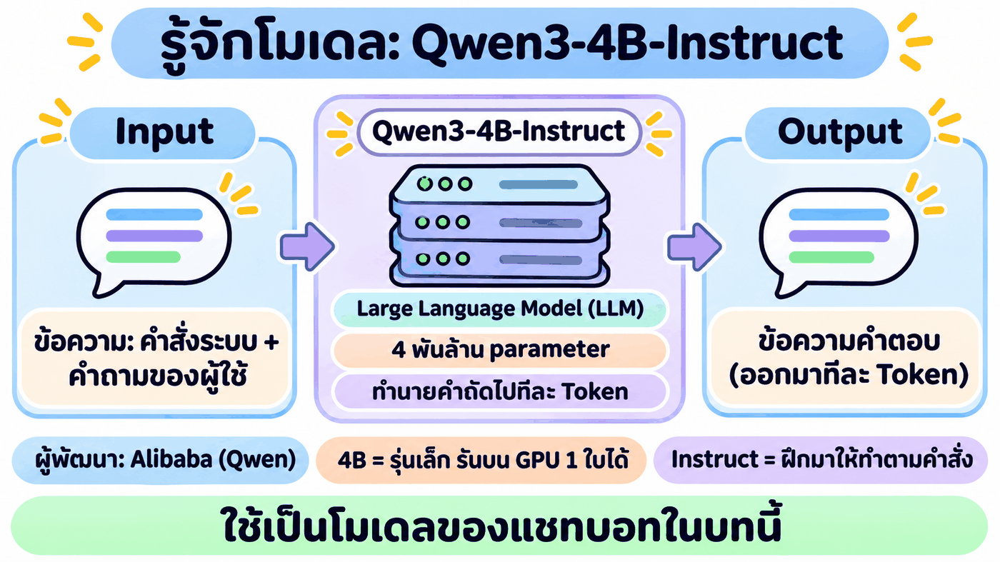
โมเดลมีขนาด 4 พันล้าน parameter ไฟล์โมเดล 7.6 GB ใช้ความยาวบริบท 4,096 token และใช้ตอบอย่างเดียว (Inference) โดยไม่เทรนเพิ่ม
โมเดลอย่างเดียวให้บริการหลายคนไม่ได้ จึงต้องมีโปรแกรมเสิร์ฟ vLLM
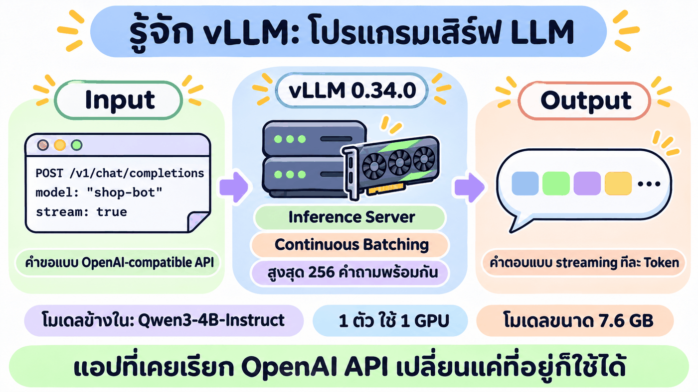
vLLM รับคำขอแบบ OpenAI-compatible API และทำ Continuous Batching ได้สูงสุด 256 คำถามพร้อมกัน โดยเปิด 1 ตัวต่อ 1 GPU
ทฤษฎีที่ต้องรู้ 8 ข้อ
วัดอะไร ตัดสินอย่างไร และทำไม Continuous Batching กับ Load Balancer จึงรับผู้ใช้ได้มากขึ้น
จำนวนผู้ใช้ (N) แปลงเป็น Throughput ได้ด้วยเวลาต่อคำถาม
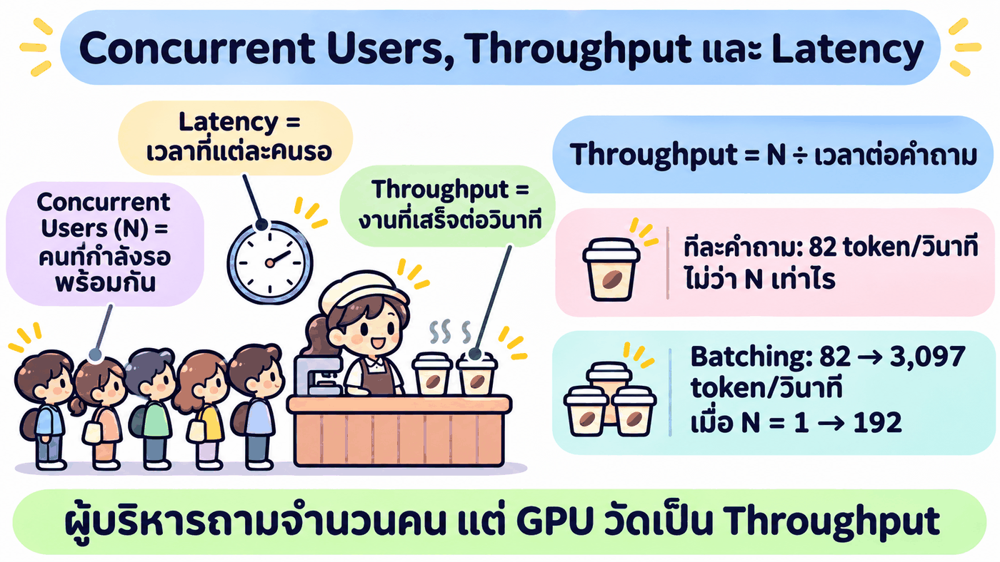
Throughput = N ÷ เวลาต่อคำถาม เพราะผู้ใช้จำลองแต่ละคนถาม รอจนจบ แล้วถามข้อใหม่ทันที (closed-loop)
ทีละคำถาม Throughput แบนที่ราว 82 ส่วน Continuous Batching อิ่มตัวที่ราว 3,000 token/วินาที
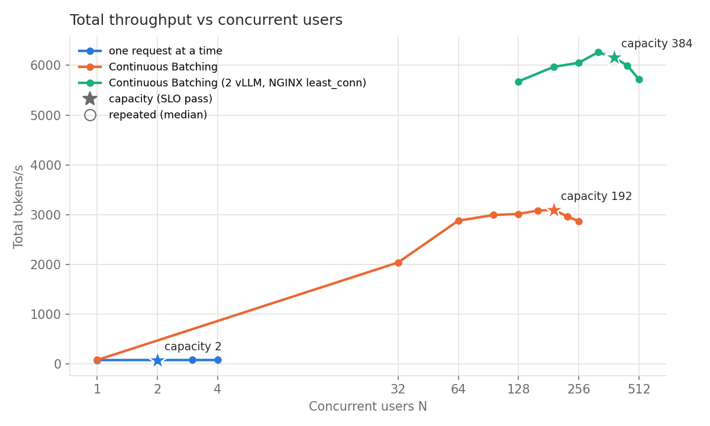
แบบทีละคำถาม Throughput คงที่ 81–82 token/วินาที ไม่ว่า N เท่าไร · แบบ Continuous Batching โตตาม N จาก 82 แล้วอิ่มตัวที่ราว 3,000 token/วินาที ตั้งแต่ N=96 (สูงสุด 3,097 ที่ N=192) · 2 ใบอิ่มตัวที่ราว 6,000 (สูงสุด 6,261)
ผู้ใช้รู้สึกช้าจาก 2 อย่าง คือรอ token แรก (TTFT) และความเร็วต่อผู้ใช้
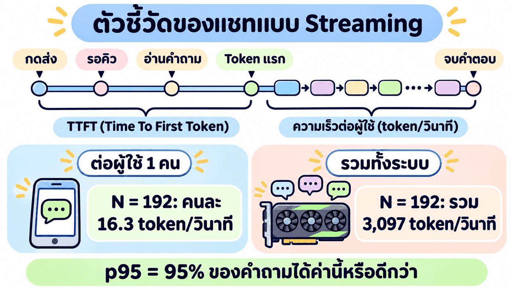
Continuous Batching ที่ N=192 ผู้ใช้ได้คนละ 16.3 token/วินาที (p5) ขณะที่ทั้งระบบได้ 3,097 token/วินาที · ที่ N=1 ได้ 84.0 และ 82 ตามลำดับ
SLO มี 3 ข้อ ต้องผ่านครบทุกข้อ และทุกระดับที่ต่ำกว่าก็ต้องผ่าน
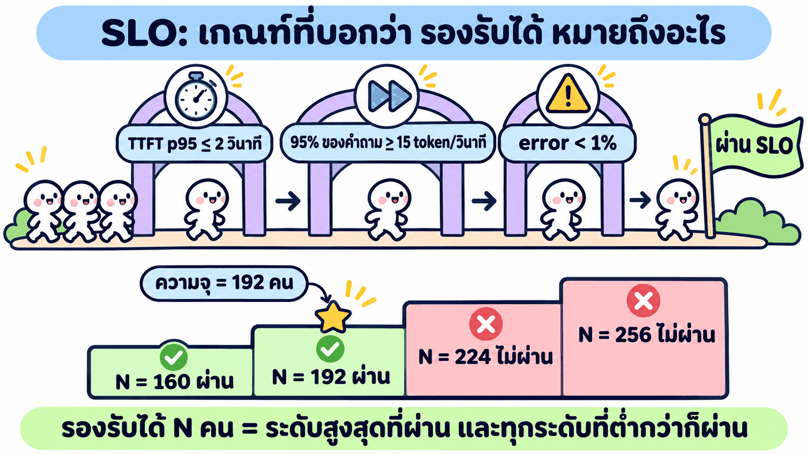
Continuous Batching 1 ใบ ผ่านถึง N=192 (ได้ 16.3 token/วินาที) ไม่ผ่านที่ N=224 (13.3) ความจุจึงเป็น 192 คน
ความเร็วต่อผู้ใช้ p5 ตัดเส้น 15 token/วินาทีหลังจุดความจุ
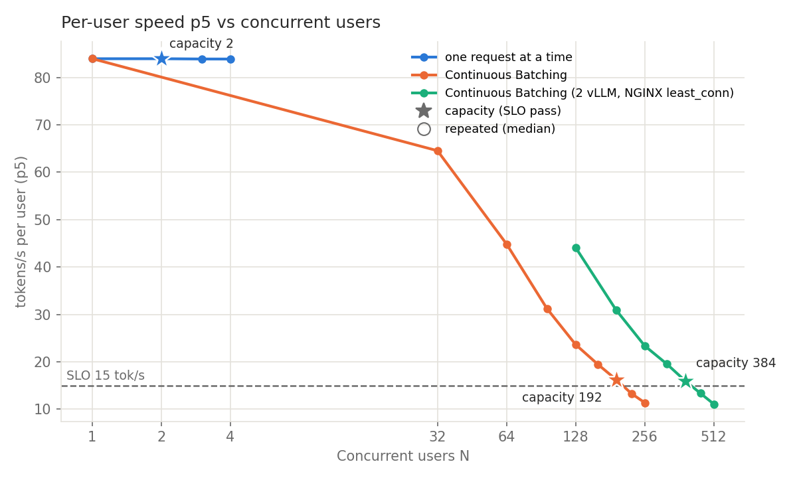
ดูเส้นสีส้มและสีเขียวที่ลดลงตาม N แล้วตัดเส้นประ 15 token/วินาที เกณฑ์ SLO เป็นการตัดสินใจทางธุรกิจ · ถ้าลดเกณฑ์ความเร็วเป็น 10 token/วินาที GPU 1 ใบจะรับได้ถึง N=256 (ได้ 11.4)
ตัวเลขความจุเชื่อได้เมื่อตรวจ GPU ก่อนวัด ไล่ N ละเอียด และวัดซ้ำในระดับที่ก้ำกึ่ง
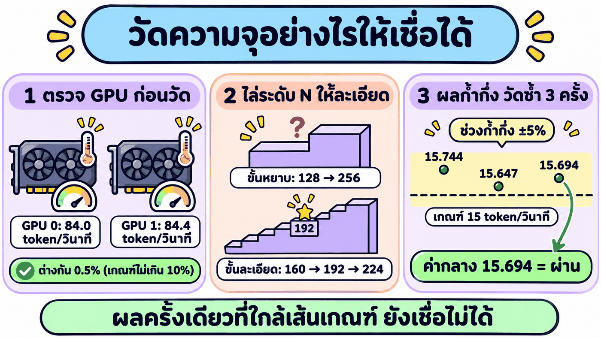
ความละเอียดของคำตอบเท่ากับขนาดขั้นบันได: ความจุจริงของ 1 ใบอยู่ระหว่าง 192–223 คน และของ 2 ใบอยู่ระหว่าง 384–447 คน
ทีละคำถามหักศอกทันทีที่มีคนที่ 2 ส่วน Continuous Batching ไม่มีคิวจนถึง N=256
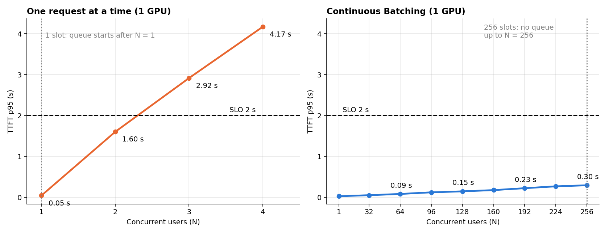
กฎของ Little: เวลาต่อคำถาม = N ÷ จำนวนคำถามที่เสร็จต่อวินาที
ใน Continuous Batching มีเพดาน 2 ชั้นซ้อนกัน
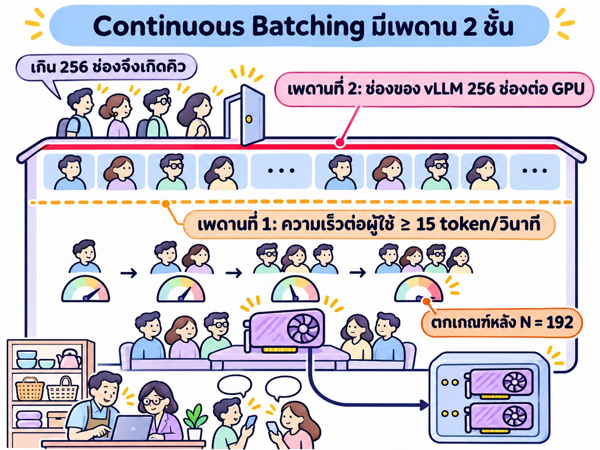
ปัญหาของการตอบทีละคำถาม: GPU ทำงานเต็ม แต่รับได้ 2 คน
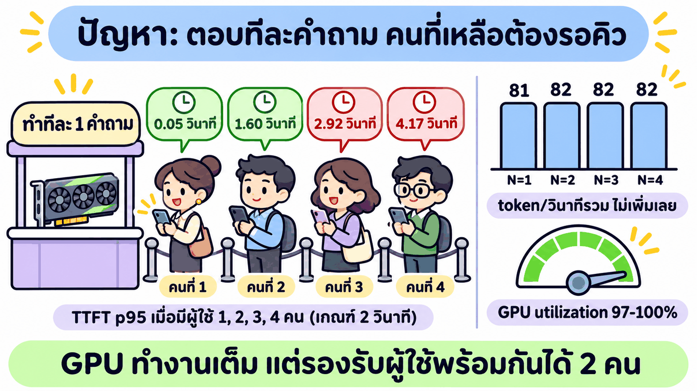
คนที่มาทีหลังต้องรอให้คนก่อนหน้าได้คำตอบครบก่อน TTFT จึงเพิ่มตาม N
Continuous Batching รับคำถามใหม่เข้าแทรกได้ทุกรอบ ไม่ต้องรอทั้งชุดจบ
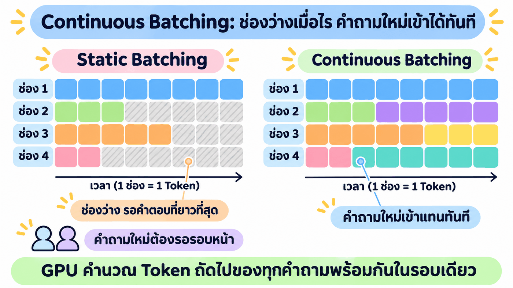
การสร้าง token 1 ตัว GPU ต้องอ่านน้ำหนักโมเดลทั้งก้อน 1 รอบ ซึ่งเป็นงานส่วนใหญ่ · อ่าน 1 รอบแล้วคำนวณให้หลายคนพร้อมกันจึงเกือบได้ฟรี
GPU ใบเดิมรองรับผู้ใช้จาก 2 เป็น 192 คน (96 เท่า)
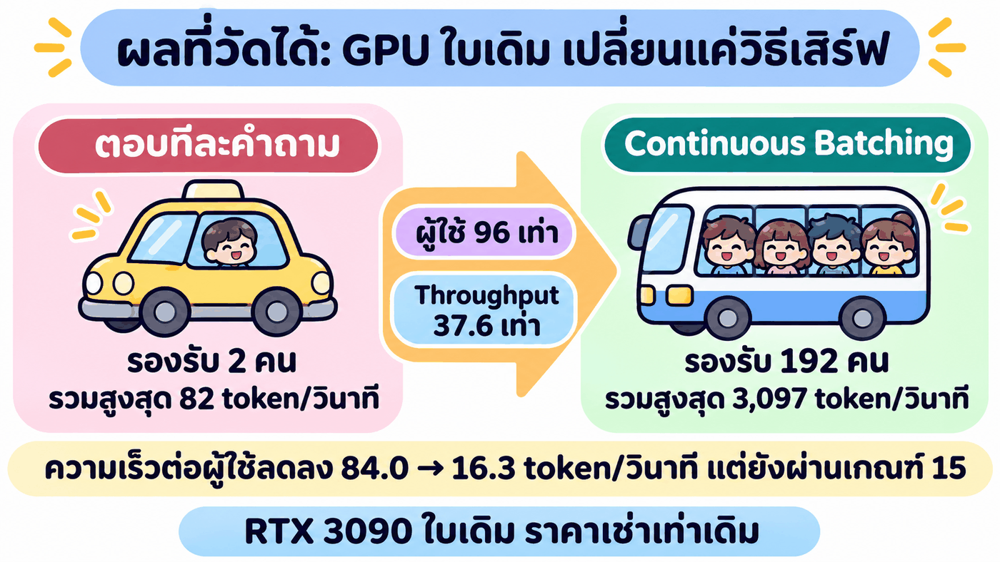
GPU utilization อยู่ที่ 97–100% ทั้งสองโหมด · "GPU เต็ม" จึงไม่ได้แปลว่าใช้คุ้ม ต้องดู Throughput ประกอบ
Load Balancer เป็นทางเข้าเดียวที่แจกงานให้หลาย GPU
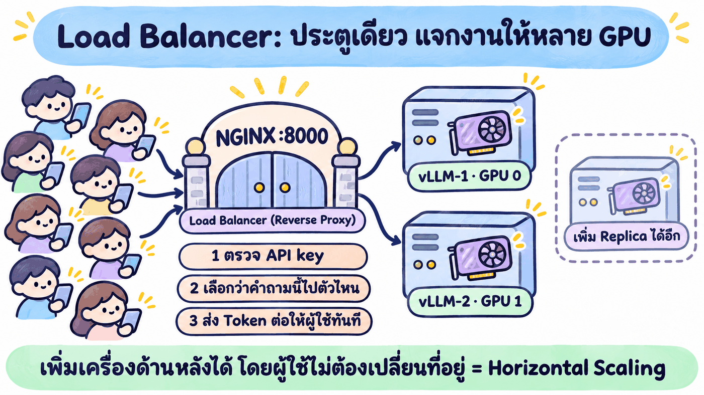
GPU 1 ใบมีเพดาน (ข้อ 5) จะรับผู้ใช้เพิ่มต้องเพิ่ม GPU และต้องมีตัวแจกงาน · การเพิ่มเครื่องด้านหลังแบบนี้เรียกว่า Horizontal Scaling ผู้ใช้ไม่ต้องเปลี่ยนที่อยู่
Round Robin แจกจำนวนคำขอเท่ากัน ส่วน least_conn แจกงานค้างเท่ากัน
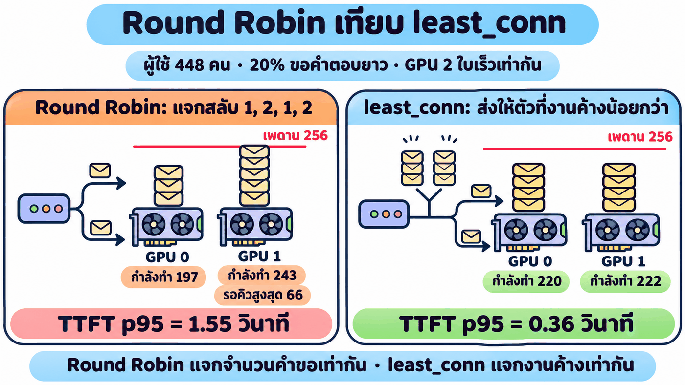
ผู้ใช้ 448 คน โดย 20% ขอคำตอบยาว ได้ TTFT p95 1.55 วินาที เทียบกับ 0.36 วินาที
Streaming ต้องปิด Proxy Buffering เพื่อให้ token ไหลผ่าน NGINX ทันที
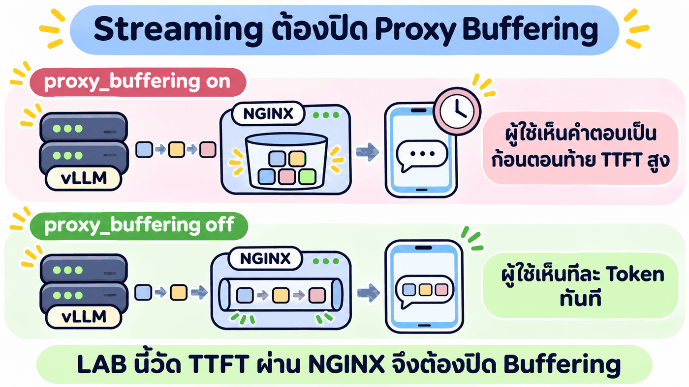
ใน LAB ทุกส่วน (NGINX, vLLM 2 ตัว, ตัวยิงโหลด) อยู่บนเครื่องเช่าเครื่องเดียวเพื่อประหยัด · ระบบจริงแยก Load Balancer กับ replica ไว้คนละเครื่อง และ Load Balancer เองต้องมีตัวสำรอง
Efficiency = ความจุ k ใบ ÷ (k × ความจุ 1 ใบ) และ LAB นี้ได้ 100%
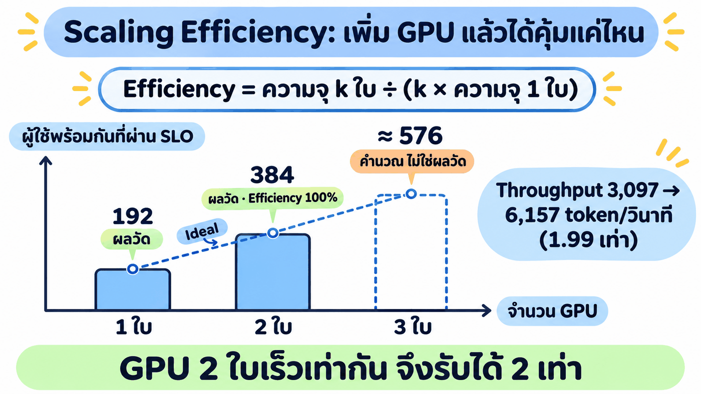
3 ใบเป็นค่าประมาณจากการคำนวณ ไม่ใช่ผลวัด (LAB นี้เช่าแค่ 2 ใบ): 192 × 3 × 100% ≈ 576 คน โดยสมมติว่า NGINX และ CPU ยังไม่เป็นคอขวด และ GPU ใบที่ 3 เร็วเท่ากับ 2 ใบแรก
ภาค LAB: 9 ขั้น ขั้นละ 1 พรอมต์
ขั้นที่ 1–7 ใช้เครื่องเดียวกัน ต่างกันเพียงวิธีเสิร์ฟและจำนวน GPU ส่วนขั้นที่ 8–9 เก็บงานเป็นสกิล v0
แผนที่ของ LAB: 9 ขั้น ทุกขั้นคือ 1 พรอมต์
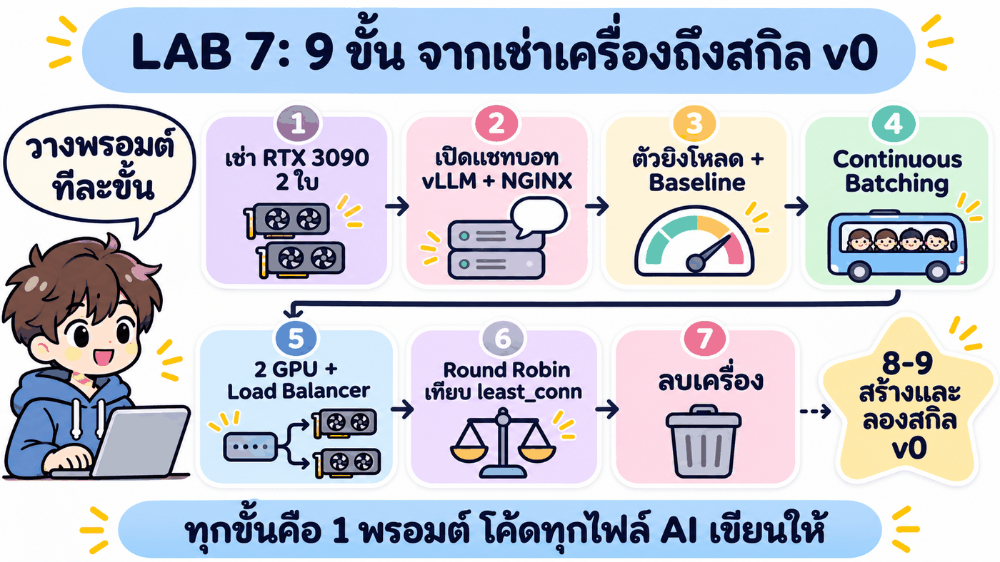
AI เขียนโค้ดทุกไฟล์จากพรอมต์ลงในโฟลเดอร์ lab7_llm_chat/code/ ซึ่งตอนเริ่มยังไม่มี
ระบบที่จะสร้าง: GPU 1 ใบในขั้นที่ 2–4 และ GPU 2 ใบหลัง NGINX ในขั้นที่ 5–6
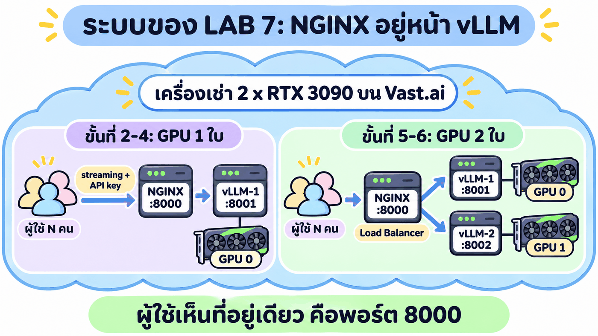
ก่อนเริ่ม: เตรียม key เปิดโฟลเดอร์ให้ถูก และทำทุกขั้นให้ครบในรอบเดียว
02_VastAi_Application เพราะ "โฟลเดอร์ปัจจุบัน" ในพรอมต์หมายถึงโฟลเดอร์นั้นเช่าเครื่อง RTX 3090 2 ใบ
AI ค้นหาเครื่องตามเกณฑ์ เช่า รอจนพร้อม แล้วตรวจว่าเห็น GPU ครบ 2 ใบและ GPU ไม่ร้อน
AI กรองเครื่องตามเกณฑ์ เลือกเครื่องที่ถูกที่สุด แล้วตรวจอุณหภูมิ GPU
vapp-lab7พรอมต์ · ขั้นที่ 1 · เช่าเครื่อง RTX 3090 2 ใบCopy & Paste
ทำงานใน container `multi-account` โฟลเดอร์ /workspace/vastapp_lab ด้วยสกิล vastai
เช่าเครื่อง 1 เครื่องที่มี RTX 3090 2 ใบ สำหรับทดลองแชทบอทรับผู้ใช้พร้อมกัน
1. ราคารวมไม่เกิน $0.60 ต่อชั่วโมง ตั้งป้ายเครื่องว่า vapp-lab7
2. เลือกเครื่อง verified ที่เชื่อม SSH ตรงได้ ความน่าเชื่อถือ (reliability) 0.95 ขึ้นไป เน็ตขาเข้า 500 Mbps ขึ้นไป CPU 16 cores ขึ้นไป แล้วเอาเครื่องที่ถูกที่สุด
3. ไดรเวอร์ต้องรองรับ CUDA 13 ขึ้นไป (vLLM รุ่นล่าสุดต้องใช้) และไม่เอาเครื่องในจีน (ดาวน์โหลดจาก Hugging Face ช้า)
4. ใช้ image PyTorch 2.8 ที่มี CUDA 12.8 disk 60 GB ไม่ต้องเปิดพอร์ตเพิ่ม เพราะตัวยิงโหลดจะรันบนเครื่องเดียวกับแชทบอท
5. รอจนเครื่องพร้อมและเข้าไปเห็น GPU ครบ 2 ใบ ถ้าเกิน 10 นาทียังไม่พร้อม ให้ลบแล้วเช่าเครื่องอื่น
6. ดูอุณหภูมิของ GPU แต่ละใบ ถ้าใบไหนร้อนเกิน 60°C ทั้งที่ยังไม่ได้ทำงาน ให้ลบแล้วเช่าเครื่องอื่น (GPU ที่ร้อนจะลดความเร็วตัวเองระหว่างวัด)
กุญแจ SSH อยู่ที่ /workspace/vastai_lab/Devtool_SSH/devtoolSSH
สรุปเป็นตารางภาษาไทย: GPU · ราคาต่อชั่วโมง · ที่ตั้ง · CPU cores · RAM · อุณหภูมิ GPU แต่ละใบ · เวลาที่รอจนเครื่องพร้อม แล้วบอกว่าเครื่องยังเปิดอยู่ตรวจผลของคุณ · ขั้นที่ 1 · เช่าเครื่อง RTX 3090 2 ใบChecklist
ผลจริง: ได้เครื่องที่ถูกที่สุดจาก 15 เครื่องที่ผ่านเงื่อนไขผลจริงของผู้สอน
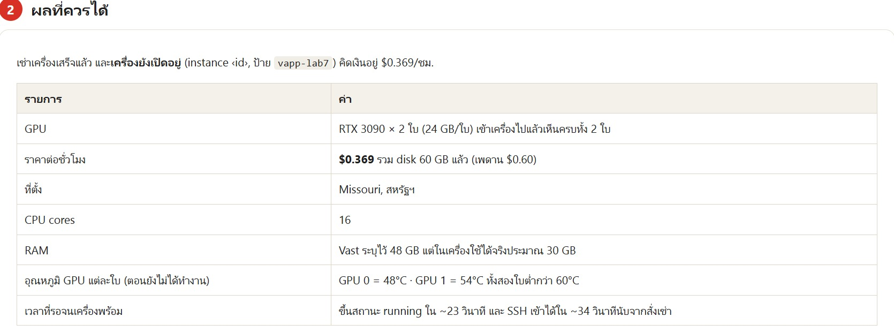
ส่วนหนึ่งของคำตอบจริง ที่ Missouri สหรัฐฯ 16 cores เข้า SSH ได้ใน 34 วินาที · ภาพเต็ม: image/lab7-step1.png
อ่านผล: เงื่อนไขในพรอมต์มีผลกับราคาจริงREADME · อ่านผลอย่างไร
เปิดแชทบอทบน GPU 1 ใบ
AI ติดตั้ง vLLM กับ NGINX ดาวน์โหลดโมเดล แล้วเขียน cluster.sh และ test_chat.py
AI ติดตั้ง vLLM และ NGINX เขียน cluster.sh แล้วทดสอบด้วยคำถาม 2 ข้อ
HF_TOKEN (ห้ามทิ้ง token ไว้บนเครื่องเช่า)cluster.sh สำหรับเปิด ปิด และดูสถานะ vLLM 1 หรือ 2 ตัว ตัวละ 1 GPU ชื่อโมเดล shop-bot บริบท 4096 tokenพรอมต์ · ขั้นที่ 2 · เปิดแชทบอทบน GPU 1 ใบCopy & Paste
ทำงานใน container `multi-account` โฟลเดอร์ /workspace/vastapp_lab ด้วยสกิล vastai
เครื่องที่ใช้คือเครื่องป้าย vapp-lab7 · กุญแจ SSH อยู่ที่ /workspace/vastai_lab/Devtool_SSH/devtoolSSH
เตรียมเครื่อง เขียนสคริปต์เปิดแชทบอท แล้วเปิดบน GPU 1 ใบ
1. ติดตั้ง vLLM, NGINX และ C compiler ที่ vLLM ต้องใช้ แล้วดาวน์โหลดโมเดล Qwen/Qwen3-4B-Instruct-2507 ด้วย HF_TOKEN จากไฟล์ .env ของโฟลเดอร์ปัจจุบัน (ห้ามทิ้ง token ไว้บนเครื่องที่เช่า)
2. เขียนสคริปต์เปิด/ปิด/ดูสถานะระบบแชทบอทไว้ที่ lab7_llm_chat/code/cluster.sh ของโฟลเดอร์ปัจจุบันนอก container แล้วนำขึ้นเครื่องที่เช่า ให้ทำได้ดังนี้
- เปิด vLLM 1 หรือ 2 ตัว ตัวละ 1 GPU คนละพอร์ต ชื่อโมเดลที่ผู้ใช้เรียกคือ shop-bot ความยาวบริบท 4096 token
- เลือกได้ว่า vLLM แต่ละตัวตอบได้ทีละ 1 คำถาม หรือ Continuous Batching ตามค่าปกติของ vLLM (พร้อมกันสูงสุด 256 คำถาม)
- NGINX รับผู้ใช้ทุกคนที่พอร์ต 8000 แล้วกระจายไป vLLM แบบ least_conn หรือ round robin (สลับได้โดยไม่ต้องเปิด vLLM ใหม่) ส่ง token ต่อทันทีแบบ streaming และบอกในคำตอบว่าไป vLLM ตัวไหน
- ต้องใช้ API key ที่สคริปต์สุ่มเองและเก็บไว้บนเครื่องที่เช่า · ระบบที่เปิดแล้วต้องทำงานต่อได้แม้การเชื่อมต่อหลุด
3. เปิดแชทบอท 1 GPU แบบ Continuous Batching แล้วทดสอบบนเครื่องที่เช่า: ถามคำถามลูกค้าร้านขายของใช้ในบ้าน 2 ข้อพร้อม key (ตอบไม่เกิน 150 token) · เรียกแบบไม่มี key ต้องถูกปฏิเสธ
ห้ามแสดงค่า key และ token · สรุปเป็นภาษาไทย: เวอร์ชัน vLLM · เวลาติดตั้ง / ดาวน์โหลดโมเดล / เปิด server · คำถาม-คำตอบพร้อมจำนวน token และเวลา แล้วบอกว่าเครื่องยังเปิดอยู่ตรวจผลของคุณ · ขั้นที่ 2 · เปิดแชทบอทบน GPU 1 ใบChecklist
ผลจริง: ผู้ใช้ 1 คนได้ราว 84 token/วินาที และคำขอที่ไม่มี key ถูกปฏิเสธผลจริงของผู้สอน
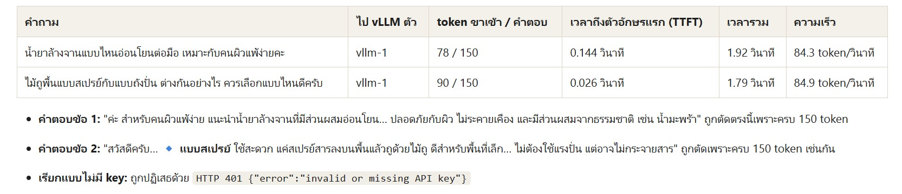
ส่วนหนึ่งของคำตอบจริง token ขาเข้า/คำตอบของ 2 ข้อคือ 78 / 150 และ 90 / 150 · ภาพเต็ม: image/lab7-step2.png
อ่านผล: 84 token/วินาทีคือความเร็วตั้งต้นของ RTX 3090 ใบนี้README · อ่านผลอย่างไร
X-Served-By ในทุกคำตอบ ใช้ตรวจการแจกงานในขั้นที่ 5–6HF_TOKEN ใช้เฉพาะตอนดาวน์โหลด และ API key ของแชทบอทอยู่บนเครื่องเช่าเท่านั้นตัวยิงโหลด และ Baseline: ตอบทีละคำถาม
AI เขียน loadtest.py เปิดแชทบอทแบบตอบทีละคำถาม ยิงโหลดไล่ N และทำภาพตัวอย่างชุดคำขอ
ตัวยิงโหลดจำลองผู้ใช้ N คนที่ถาม รอคำตอบจนจบ แล้วถามข้อใหม่ทันที
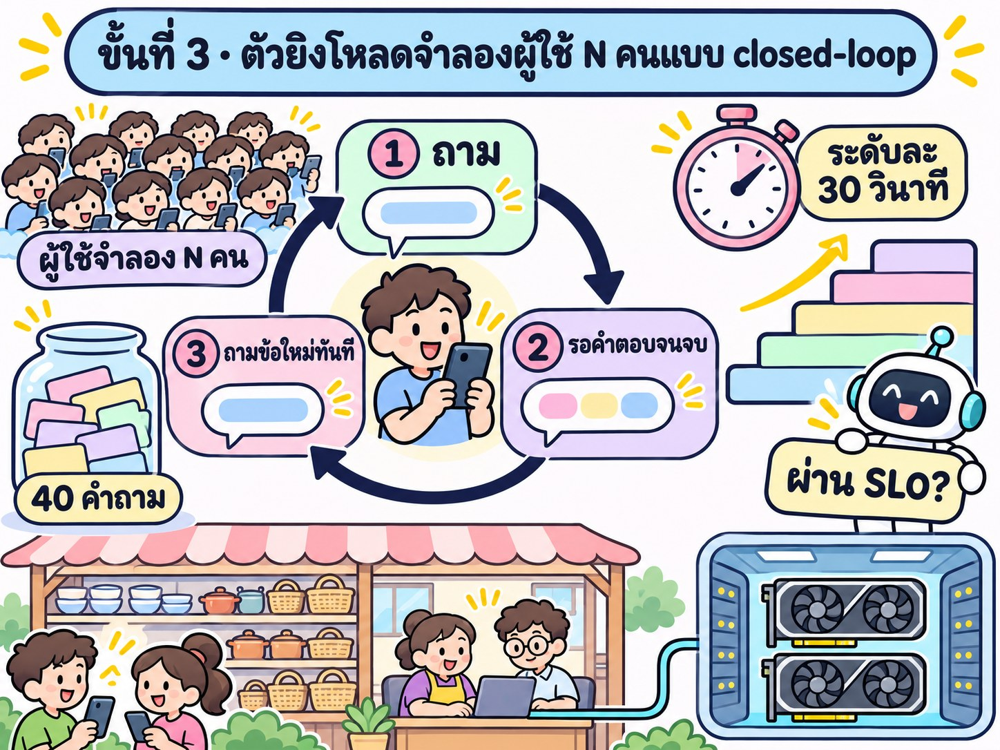
พรอมต์ · ขั้นที่ 3 · ตัวยิงโหลด และ Baseline: ตอบทีละคำถามCopy & Paste
ทำงานใน container `multi-account` โฟลเดอร์ /workspace/vastapp_lab ด้วยสกิล vastai
เครื่องที่ใช้คือเครื่องป้าย vapp-lab7 · กุญแจ SSH อยู่ที่ /workspace/vastai_lab/Devtool_SSH/devtoolSSH
เขียนตัวยิงโหลด แล้ววัดว่าแชทบอทบน GPU 1 ใบที่ตอบทีละคำถาม (ไม่มี batching) รองรับผู้ใช้พร้อมกันได้กี่คน
1. เขียนตัวยิงโหลดไว้ที่ lab7_llm_chat/code/loadtest.py ของโฟลเดอร์ปัจจุบันนอก container จำลองผู้ใช้ N คน แต่ละคนถาม รอคำตอบแบบ streaming จนจบ แล้วถามข้อใหม่ทันที
- ใช้คำถามลูกค้าร้านขายของใช้ในบ้านภาษาไทยสั้นๆ 40 ข้อ สุ่มถาม ตอบไม่เกิน 150 token ยิงผ่าน NGINX พร้อม key
- ไล่ N ตามรายการที่ให้ ระดับละ 30 วินาที ไม่นับ 5 วินาทีแรก (warm-up) หยุดเองเมื่อไม่ผ่าน SLO 2 ระดับติดกัน · ระดับที่ผลก้ำกึ่ง (ห่างเส้นเกณฑ์ไม่เกิน 5%) วัดซ้ำเองอีก 2 ครั้งแล้วใช้ค่ากลาง
- ต่อระดับวัด TTFT p50/p95/p99 · ความเร็วต่อผู้ใช้ p50 และ p5 · token/วินาทีรวม · error · GPU utilization · อุณหภูมิและ clock ของ GPU แต่ละใบ · คำถามที่กำลังทำและที่รอคิว · คำถามที่ vLLM แต่ละตัวได้ · CPU% ของตัวยิง
- แบ่งผู้ใช้จำลองไปหลาย process ให้ตัวยิงไม่เป็นคอขวด · เก็บผลชุดละ 1 ไฟล์ JSON และพิมพ์ตารางเมื่อจบ
2. เกณฑ์ SLO ที่ใช้ตัดสินแต่ละระดับ: TTFT p95 ≤ 2 วินาที · 95% ของคำถามได้ ≥ 15 token/วินาที · error < 1% · "รองรับได้ N คน" = ระดับสูงสุดที่ผ่าน และทุกระดับที่ต่ำกว่าก็ผ่าน
3. เปิดแชทบอท 1 GPU แบบตอบทีละคำถาม แล้วยิงโหลดบนเครื่องที่เช่าด้วย N = 1, 2, 3, 4, 6, 8 ให้รันต่อได้แม้การเชื่อมต่อหลุด แล้วคัดลอกผลกลับมาไว้ที่ lab7_llm_chat/results ของโฟลเดอร์ปัจจุบันนอก container
4. ให้ผู้เรียนเห็นชุดคำขอที่ใช้ยิง: ทำภาพตารางคำถาม 8 ข้อจากชุด 40 ข้อ คู่กับคำตอบจริงของแชทบอท จำนวน token และเวลา
เก็บที่ lab7_llm_chat/results/dataset_samples.png ของโฟลเดอร์ปัจจุบันนอก container และอธิบายคำขอ 1 รายการว่ามีช่องอะไรบ้าง
ห้ามแสดงค่า key · สรุปเป็นตารางภาษาไทย: ตัวอย่างคำถาม-คำตอบ 3 ข้อ · ทุกระดับ N: TTFT p50 / p95 · token/วินาทีต่อผู้ใช้ · token/วินาทีรวม · จำนวนคำถามที่รอคิว · ผ่าน SLO ไหม
เขียนประโยค "GPU 1 ใบ แบบทีละคำถาม รองรับผู้ใช้พร้อมกันได้ N คน" แล้วบอกว่าเครื่องยังเปิดอยู่ตรวจผลของคุณ · ขั้นที่ 3 · ตัวยิงโหลด และ Baseline: ตอบทีละคำถามChecklist
ผลจริง: GPU 1 ใบ แบบทีละคำถาม รองรับผู้ใช้พร้อมกันได้ 2 คนผลจริงของผู้สอน
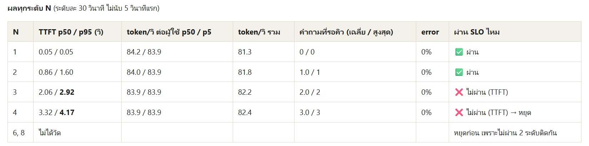
ส่วนหนึ่งของคำตอบจริง ตัวยิงหยุดเองหลังไม่ผ่าน 2 ระดับติดกัน จึงไม่ได้วัด N=6 และ 8 · ภาพเต็ม: image/lab7-step3.png
อ่านผล: สิ่งเดียวที่เพิ่มตาม N คือเวลารอคิวREADME · อ่านผลอย่างไร
Continuous Batching บน GPU 1 ใบ
AI เปิดแชทบอทใหม่ในโหมด Continuous Batching เขียน precheck.py แล้วยิงโหลดด้วยตัวยิงเดิม
GPU ใบเดิม เปลี่ยนเพียงวิธีเสิร์ฟเป็น Continuous Batching แล้ววัดด้วยเกณฑ์เดิม
cluster.sh ที่เขียนไว้ในขั้นก่อนพรอมต์ · ขั้นที่ 4 · Continuous Batching บน GPU 1 ใบCopy & Paste
ทำงานใน container `multi-account` โฟลเดอร์ /workspace/vastapp_lab ด้วยสกิล vastai
เครื่องที่ใช้คือเครื่องป้าย vapp-lab7 · กุญแจ SSH อยู่ที่ /workspace/vastai_lab/Devtool_SSH/devtoolSSH
วัดซ้ำบน GPU 1 ใบ แต่ให้ vLLM ใช้ Continuous Batching (รวมคำถามของหลายคนเข้า GPU พร้อมกัน สูงสุด 256 คำถาม)
1. เปิดแชทบอท 1 GPU แบบ Continuous Batching ด้วยสคริปต์ lab7_llm_chat/code/cluster.sh ที่เขียนไว้ในขั้นก่อน
2. ก่อนวัด ดูอุณหภูมิและ clock ของ GPU ที่ใช้ และความเร็วตอบผู้ใช้ 1 คน (token/วินาที)
3. ยิงโหลดด้วยตัวยิงโหลด lab7_llm_chat/code/loadtest.py ตัวเดิม N = 1, 32, 64, 96, 128, 160, 192, 224, 256 (ละเอียดทีละ 32 คน) ให้รันต่อได้แม้การเชื่อมต่อหลุด
แล้วคัดลอกผลกลับมาไว้ที่ lab7_llm_chat/results ของโฟลเดอร์ปัจจุบันนอก container
4. ใช้เกณฑ์ SLO เดิม: TTFT p95 ≤ 2 วินาที · 95% ของคำถามได้ ≥ 15 token/วินาที · error < 1% · ระดับที่ผลก้ำกึ่งให้วัดซ้ำ 2 ครั้งแล้วใช้ค่ากลาง
ห้ามแสดงค่า key · สรุปเป็นตารางภาษาไทยทุกระดับ N เหมือนขั้นที่ 3 พร้อม GPU utilization · อุณหภูมิ/clock ของ GPU · CPU% ของตัวยิงโหลด (ต้องไม่เต็ม) · ระดับไหนวัดซ้ำ (ค่าทั้ง 3 ครั้งและค่ากลาง)
เทียบกับแบบทีละคำถาม: รองรับผู้ใช้ได้กี่เท่า · token/วินาทีรวมสูงสุดเพิ่มกี่เท่า
เขียนประโยค "GPU 1 ใบ ด้วย Continuous Batching รองรับผู้ใช้พร้อมกันได้ N คน" แล้วบอกว่าเครื่องยังเปิดอยู่ตรวจผลของคุณ · ขั้นที่ 4 · Continuous Batching บน GPU 1 ใบChecklist
ผลจริง: GPU 1 ใบ ด้วย Continuous Batching รองรับผู้ใช้พร้อมกันได้ 192 คนผลจริงของผู้สอน
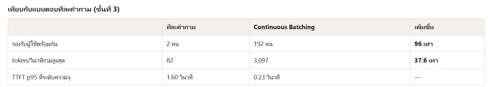
ส่วนหนึ่งของคำตอบจริง · ภาพเต็ม: image/lab7-step4.png
ทุกระดับ N: ไม่มีคิวเลยจนถึง N=256 แต่ความเร็วต่อผู้ใช้ตกเกณฑ์หลัง N=192ตารางหลัก
| N | TTFT p50 / p95 (วินาที) | ความเร็วต่อผู้ใช้ p50 / p5 | token/วินาทีรวม | อุณหภูมิสูงสุด / clock เฉลี่ย | รอคิว | SLO |
|---|---|---|---|---|---|---|
| 1 | 0.03 / 0.03 | 84.1 / 84.0 | 82 | 64°C / 1,887 MHz | 0 | ✅ |
| 32 | 0.05 / 0.06 | 65.6 / 64.5 | 2,041 | 66°C / 1,864 MHz | 0 | ✅ |
| 64 | 0.07 / 0.09 | 46.4 / 44.9 | 2,881 | 67°C / 1,826 MHz | 0 | ✅ |
| 96 | 0.11 / 0.13 | 32.1 / 31.2 | 2,994 | 68°C / 1,831 MHz | 0 | ✅ |
| 128 | 0.14 / 0.15 | 24.3 / 23.6 | 3,016 | 68°C / 1,822 MHz | 0 | ✅ |
| 160 | 0.17 / 0.18 | 19.8 / 19.5 | 3,083 | 68°C / 1,816 MHz | 0 | ✅ |
| 192 | 0.20 / 0.23 | 16.7 / 16.3 | 3,097 | 68°C / 1,831 MHz | 0 | ✅ |
| 224 | 0.25 / 0.27 | 13.7 / 13.3 | 2,968 | 68°C / 1,832 MHz | 0 | ❌ ช้ากว่า 15 |
| 256 | 0.29 / 0.30 | 11.6 / 11.4 | 2,869 | 67°C / 1,848 MHz | 0 | ❌ ช้ากว่า 15 |
อ่านผล: สองโหมดตกเกณฑ์คนละข้อREADME · อ่านผลอย่างไร
เพิ่มเป็น 2 GPU หลัง Load Balancer
AI เปิด vLLM 2 ตัวหลัง NGINX แบบ least_conn เขียน precheck2.py ยิงโหลด แล้วเขียน report.py
เปิด vLLM 2 ตัว ตัวละ 1 GPU หลัง NGINX แบบ least_conn แล้ววัดด้วยเกณฑ์เดิม
report.py สร้าง metrics.json และกราฟบนเครื่องเรานอก containerพรอมต์ · ขั้นที่ 5 · เพิ่มเป็น 2 GPU หลัง Load BalancerCopy & Paste
ทำงานใน container `multi-account` โฟลเดอร์ /workspace/vastapp_lab ด้วยสกิล vastai
เครื่องที่ใช้คือเครื่องป้าย vapp-lab7 · กุญแจ SSH อยู่ที่ /workspace/vastai_lab/Devtool_SSH/devtoolSSH
เพิ่ม GPU: vLLM 2 ตัว ตัวละ 1 GPU แบบ Continuous Batching หลัง NGINX แบบ least_conn (ส่งคำถามใหม่ไปตัวที่มีงานค้างน้อยที่สุด) วัดด้วยเกณฑ์ SLO เดิม
1. เปิด vLLM 2 ตัว ก่อนวัดตรวจ GPU ทั้ง 2 ใบ: อุณหภูมิ · clock · ความเร็วตอบผู้ใช้ 1 คนของ vLLM แต่ละตัว ถ้า 2 ใบเร็วต่างกันเกิน 10% ให้บอกไว้ในสรุป (ใช้เครื่องเดิมต่อ ไม่ต้องเปลี่ยน)
2. ยิงโหลด N = 128, 192, 256, 320, 384, 448, 512 (ละเอียดทีละ 64 คน) ระดับที่ผลก้ำกึ่งให้วัดซ้ำ 2 ครั้งแล้วใช้ค่ากลาง ให้รันต่อได้แม้การเชื่อมต่อหลุด
แล้วคัดลอกผลกลับมาไว้ที่ lab7_llm_chat/results ของโฟลเดอร์ปัจจุบันนอก container
3. เขียนตัวสรุปผลไว้ที่ lab7_llm_chat/code/report.py อ่านผลทุกชุดในโฟลเดอร์ lab7_llm_chat/results แล้วสร้างในโฟลเดอร์เดียวกัน
- metrics.json: ความจุของทุกชุดตามกติกา (ระดับสูงสุดที่ผ่านและทุกระดับที่ต่ำกว่าผ่าน ระดับที่วัดซ้ำใช้ค่ากลาง) · ค่าทุกครั้งที่วัดซ้ำ · ผลตรวจ GPU ก่อนวัด
- ใน metrics.json มีตารางตามจำนวน GPU: สถาปัตยกรรม · N · token/วินาทีรวม · TTFT p95 ที่ N นั้น · เท่าของ 1 ใบ · Efficiency
- กราฟ matplotlib ป้ายภาษาอังกฤษสั้นๆ: TTFT p95 เทียบ N พร้อมเส้น SLO และจุดความจุ · token/วินาทีรวมเทียบ N · ความจุเทียบจำนวน GPU พร้อมเส้น ideal
4. รันตัวสรุปผลบนเครื่องเรานอก container (ไม่ใช่เครื่องที่เช่า)
ห้ามแสดงค่า key · สรุปเป็นตารางภาษาไทย: ผลตรวจ GPU 2 ใบก่อนวัด · ทุกระดับ N ของ 2 GPU (ระดับไหนวัดซ้ำ)
และตาราง: จำนวน GPU · สถาปัตยกรรม · รองรับผู้ใช้พร้อมกัน (N) · token/วินาทีรวม · TTFT p95 ที่ N นั้น · เท่าของ 1 ใบ · Efficiency
เขียนประโยค "1 ใบ N₁ คน → 2 ใบ N₂ คน (x เท่า, efficiency y%)" บอกว่า GPU 2 ใบได้งานเท่ากันไหม และประมาณว่าถ้าเพิ่มเป็น 3 ใบน่าจะได้กี่คน (บอกว่าเป็นการคำนวณ ไม่ใช่ผลวัด) แล้วบอกว่าเครื่องยังเปิดอยู่ตรวจผลของคุณ · ขั้นที่ 5 · เพิ่มเป็น 2 GPU หลัง Load BalancerChecklist
ผลจริง: 2 GPU ผ่านถึง N=384 และ Throughput ที่ความจุคือ 6,157 token/วินาทีผลจริงของผู้สอน
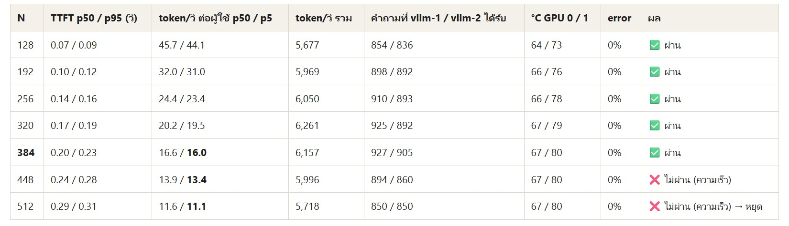
ส่วนหนึ่งของคำตอบจริง · ภาพเต็ม: image/lab7-step5.png
อ่านผล: GPU 2 ใบได้งานเกือบเท่ากัน จึงได้ 2.00 เท่าREADME · อ่านผลอย่างไร
AI เพิ่มกราฟ speed_p5_vs_n.png ให้เอง เพราะเกณฑ์ที่ทำให้ไม่ผ่านคือความเร็ว
ทดลองเสริม: Round Robin เทียบ least_conn
AI เพิ่มตัวเลือก "คำตอบยาว" ใน loadtest.py ยิง 2 รอบโดยสลับวิธีแจกงานของ NGINX แล้วเพิ่มตารางและกราฟใน report.py
ผู้ใช้ 448 คน โดย 20% ขอคำตอบยาว ยิง 2 รอบโดยสลับวิธีแจกงานของ NGINX
report.py: ตารางและกราฟ TTFT p95 และจำนวนคำถามที่ GPU แต่ละใบกำลังทำพรอมต์ · ขั้นที่ 6 · ทดลองเสริม: Round Robin เทียบ least_connCopy & Paste
ทำงานใน container `multi-account` โฟลเดอร์ /workspace/vastapp_lab ด้วยสกิล vastai
เครื่องที่ใช้คือเครื่องป้าย vapp-lab7 · กุญแจ SSH อยู่ที่ /workspace/vastai_lab/Devtool_SSH/devtoolSSH
ทดลองวิธีกระจายโหลดของ NGINX บน 2 GPU เมื่อคำตอบบางข้อยาวกว่าข้ออื่นมาก
1. เพิ่มตัวเลือกในตัวยิงโหลด lab7_llm_chat/code/loadtest.py: ให้ 20% ของคำถามขอคำตอบละเอียดยาวได้ถึง 600 token ที่เหลือไม่เกิน 150 token เหมือนเดิม
2. ใช้ผู้ใช้ระดับเดียว 448 คน (ราว 90% ของ 512 คำถามที่ vLLM 2 ตัวทำพร้อมกันได้) วัด 90 วินาที ไม่นับ 30 วินาทีแรก
3. ยิงครั้งแรกตอน NGINX เป็น round robin (ส่งวนตามลำดับ) แล้วยิงอีกครั้งตอนเป็น least_conn
4. คัดลอกผลกลับมาไว้ที่ lab7_llm_chat/results ของโฟลเดอร์ปัจจุบันนอก container แล้วเพิ่มในตัวสรุปผล lab7_llm_chat/code/report.py: ตารางและกราฟเทียบ 2 วิธี (TTFT p95 และจำนวนคำถามที่ GPU แต่ละใบกำลังทำ) แล้วรันใหม่
ห้ามแสดงค่า key · สรุปเป็นตารางภาษาไทย Round Robin เทียบ least_conn: จำนวนผู้ใช้ · TTFT p95 · ความเร็ว p5 ต่อผู้ใช้ · token/วินาทีรวม · จำนวนคำถามที่ GPU แต่ละใบกำลังทำ
อธิบายสั้นๆ ว่าทำไมผลต่างกัน (หรือทำไมไม่ต่าง) แล้วบอกว่าเครื่องยังเปิดอยู่ตรวจผลของคุณ · ขั้นที่ 6 · ทดลองเสริม: Round Robin เทียบ least_connChecklist
ผลจริง: least_conn ได้ TTFT p95 ดีกว่าราว 4 เท่าผลจริงของผู้สอน
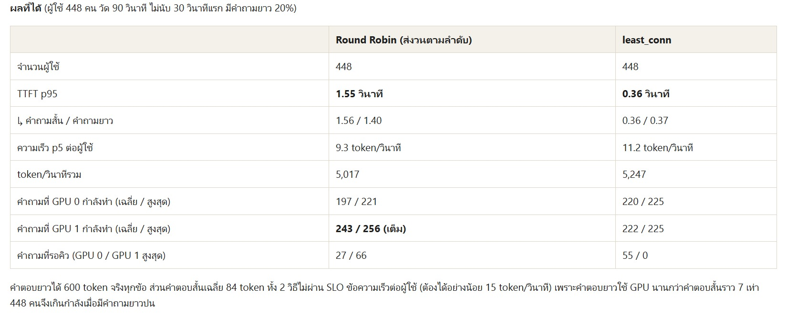
ส่วนหนึ่งของคำตอบจริง · ภาพเต็ม: image/lab7-step6.png
ความเร็ว p5 9.3 และรวม 5,017 token/วินาที
ความเร็ว p5 11.2 และรวม 5,247 token/วินาที
Round Robin: GPU 1 สะสมงานจนชนเพดาน 256 ส่วน least_conn สองเส้นทับกันที่ราว 220README · อ่านผลอย่างไร
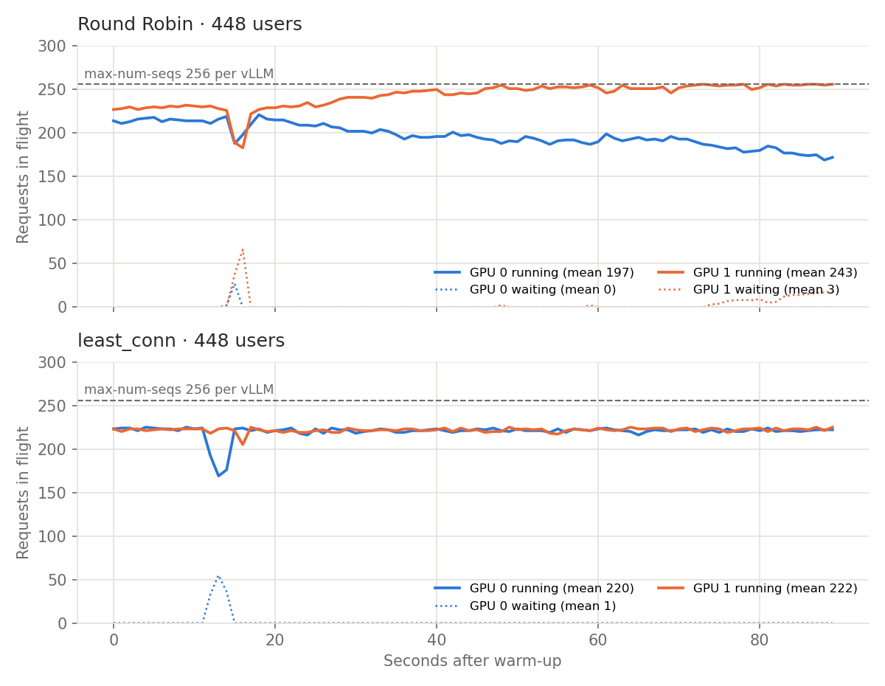
TTFT p95 ต่ำกว่าเส้น SLO 2 วินาทีทั้งสองวิธี แต่ทั้งสองวิธีไม่ผ่าน SLO ข้อความเร็วREADME · อ่านผลอย่างไร
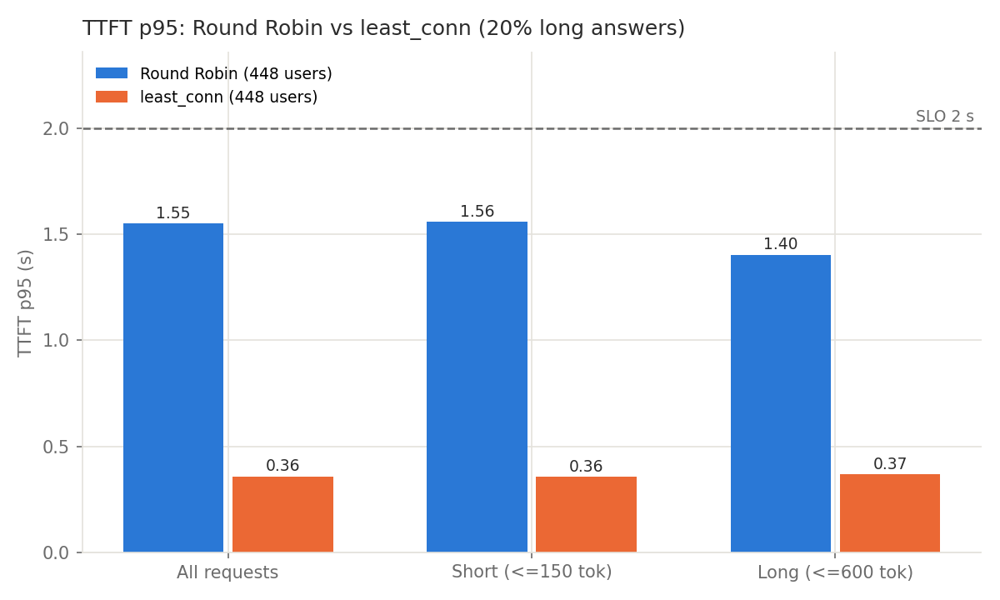
ลบเครื่องและสรุปค่าใช้จ่าย (ห้ามข้าม)
AI ตรวจว่าโค้ดและผลกลับมาครบ ลบเครื่อง แล้วอ่านยอดจากใบแจ้งหนี้
ตรวจว่าโค้ดและผลกลับมาครบ ลบเครื่อง แล้วอ่านยอดจากใบแจ้งหนี้
lab7_llm_chat/code และ metrics.json กับกราฟอยู่ใน lab7_llm_chat/results ถ้ายังไม่ครบให้คัดลอกมาก่อนvapp-lab7 แล้วตรวจว่าไม่มีเครื่องป้ายนี้ค้างในบัญชี (ห้ามแตะเครื่องป้ายอื่น)พรอมต์ · ขั้นที่ 7 · ลบเครื่องและสรุปค่าใช้จ่าย (ห้ามข้าม)Copy & Paste
ทำงานใน container `multi-account` โฟลเดอร์ /workspace/vastapp_lab ด้วยสกิล vastai
ปิดทุกอย่างของ LAB 7
1. ตรวจว่าโค้ดทุกไฟล์อยู่ใน lab7_llm_chat/code และผลการวัด metrics.json กับกราฟอยู่ใน lab7_llm_chat/results ของโฟลเดอร์ปัจจุบันนอก container ครบแล้ว ถ้ายังไม่ครบให้คัดลอกมาก่อน
2. ลบเครื่องป้าย vapp-lab7 แล้วตรวจว่าไม่มีเครื่องป้ายนี้ค้างในบัญชี (ห้ามแตะเครื่องป้ายอื่น)
สรุปเป็นภาษาไทย ค่าใช้จ่ายจริงของเครื่อง vapp-lab7: อายุเครื่อง · ราคาต่อชั่วโมง · ยอดที่ถูกคิด (GPU · disk · รับส่งข้อมูล)ตรวจผลของคุณ · ขั้นที่ 7 · ลบเครื่องและสรุปค่าใช้จ่าย (ห้ามข้าม)Checklist
ผลจริง: ค่าเช่าทั้งเครื่อง $0.597 และค่าดาวน์โหลดสูงกว่าค่า GPUผลจริงของผู้สอน
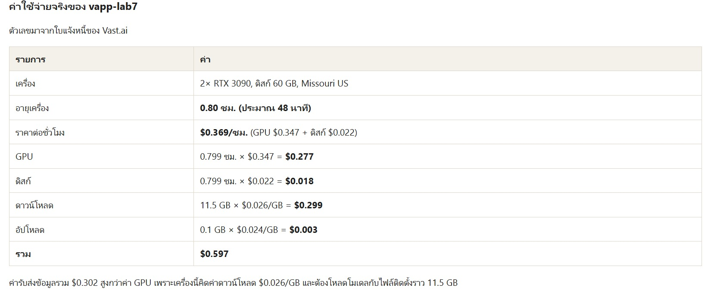
ส่วนหนึ่งของคำตอบจริง · ภาพเต็ม: image/lab7-step7.png
อ่านผล: ค่ารับส่งข้อมูลต้องดูด้วย ไม่ใช่ดูเพียงราคาต่อชั่วโมงREADME · อ่านผลอย่างไร
lab7_llm_chat/code ก่อนลบเครื่องสร้างสกิลเวอร์ชัน 0
AI อ่านพรอมต์ โค้ด และผลของ LAB แล้วเขียนเป็นสกิล llm-chat-capacity พร้อมคัดลอกโค้ด 8 ไฟล์เข้า scripts/
llm-chat-capacity ไม่ต้องเช่าเครื่องสกิลคือโฟลเดอร์ที่เก็บวิธีทำงานที่สำเร็จแล้ว พร้อมโค้ดที่ใช้ได้แล้ว

SKILL.md บอกว่าใช้เมื่อไร ค่าที่ปรับได้ ขั้นตอน และกติกาเรื่องเงิน ส่วน scripts/ เก็บโค้ดที่ใช้ได้แล้ว AI จึงทำซ้ำได้ในคำสั่งเดียว
พรอมต์ · ขั้นที่ 8 · สร้างสกิลเวอร์ชัน 0Copy & Paste
สร้างสกิลเวอร์ชัน 0 จากงานของ LAB 7 ที่เพิ่งทำเสร็จ เพื่อให้ครั้งหน้าสั่งวัดความจุแชทบอทซ้ำได้ในคำสั่งเดียว
1. ดูงานทั้งหมดจากพรอมต์ทุกขั้นใน lab7_llm_chat/PROMPTS.md โค้ดใน lab7_llm_chat/code และผลใน lab7_llm_chat/results
2. เขียนเป็นสกิลชื่อ llm-chat-capacity เก็บที่ lab7_llm_chat/skill_v0/SKILL.md ให้มี name กับ description (บอกว่าใช้เมื่อไร) · ค่าที่ปรับได้พร้อมค่าเริ่มต้น · ขั้นตอน · เกณฑ์ตรวจผ่าน · กติกาเรื่องเงิน (ลบเครื่องเสมอ)
3. คัดลอกโค้ดที่ใช้ได้แล้วจาก lab7_llm_chat/code เข้าไปไว้ใน lab7_llm_chat/skill_v0/scripts ให้สกิลใช้โค้ดชุดนี้ ไม่ต้องเขียนใหม่
4. ให้สกิลนี้เรียกใช้สกิล vastai ต่อ ไม่เขียนวิธีใช้ Vast.ai ซ้ำ แล้วติดตั้งเป็นสกิลของโปรเจกต์ที่ .claude/skills/llm-chat-capacity ของโฟลเดอร์ปัจจุบัน
สรุปเป็นภาษาไทย: สกิลทำอะไรได้ · ค่าที่ปรับได้ · ไฟล์ที่สร้าง
ไม่ต้อง commitตรวจผลของคุณ · ขั้นที่ 8 · สร้างสกิลเวอร์ชัน 0Checklist
llm-chat-capacity และสคริปต์ 8 ไฟล์ใน scripts/ ไม่ต้องเช่าเครื่อง ใช้เวลา 3 นาทีผลจริง: ได้สกิล llm-chat-capacity พร้อมสคริปต์ 8 ไฟล์ ใช้เวลา 3 นาทีผลจริงของผู้สอน
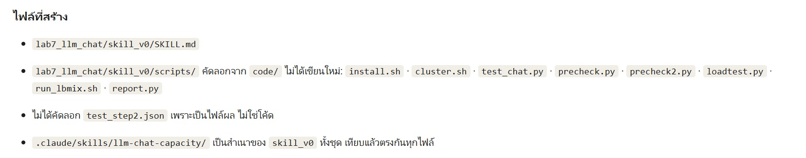
ส่วนหนึ่งของคำตอบจริง · ภาพเต็ม: image/lab7-step8.png
code/ลองใช้สกิลทำซ้ำในพรอมต์เดียว
AI ตัวใหม่ทำตามสกิล: เช่าเครื่อง ติดตั้ง เปิดแชทบอท ตรวจ GPU ยิงโหลด 2 แบบ สรุปผล ลบเครื่อง และอ่านบิล
สกิล v0 ทำงานทั้ง LAB ในพรอมต์เดียว โดยใช้โค้ดใน scripts/
vapp-lab7-skillscripts/ ไม่ต้องเขียนใหม่results/skill_v0_run ไม่เขียนทับผลเดิมพรอมต์ · ขั้นที่ 9 · ลองใช้สกิลทำซ้ำในพรอมต์เดียวCopy & Paste
ใช้สกิล llm-chat-capacity วัดว่าแชทบอทบน GPU 1 ใบ แบบทีละคำถาม กับแบบ Continuous Batching รองรับผู้ใช้พร้อมกันได้กี่คน
ใช้เครื่อง RTX 3090 1 ใบ ราคาไม่เกิน $0.30 ต่อชั่วโมง ป้าย vapp-lab7-skill (ไม่ต้องวัด 2 GPU) เสร็จแล้วลบเครื่อง
เก็บผลไว้ที่ lab7_llm_chat/results/skill_v0_run ห้ามเขียนทับผลเดิมใน lab7_llm_chat/results
สรุปเป็นภาษาไทย: ตารางความจุ 2 แบบ · เวลาแต่ละขั้น · ค่าใช้จ่ายจริง
ไม่ต้อง commitตรวจผลของคุณ · ขั้นที่ 9 · ลองใช้สกิลทำซ้ำในพรอมต์เดียวChecklist
ผลจริง: สกิล v0 ผ่านในรอบแรก แต่ความจุต่ำกว่ารอบหลักผลจริงของผู้สอน
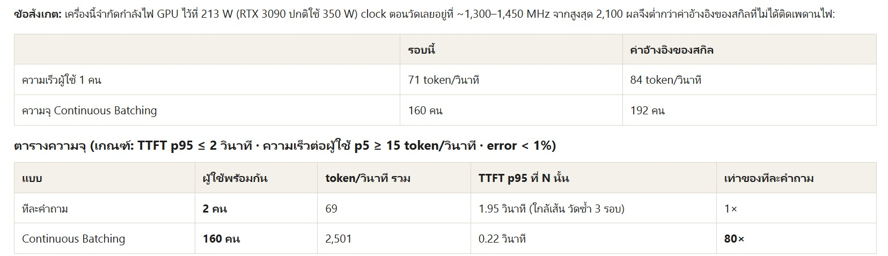
ส่วนหนึ่งของคำตอบจริง · ภาพเต็ม: image/lab7-step9.png
กติกาวัดซ้ำได้ใช้จริง: 2 ระดับห่างเส้นเกณฑ์ไม่ถึง 5%results/skill_v0_run
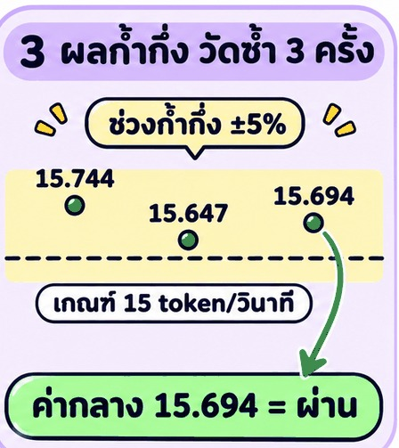
ทีละคำถาม N=2 · TTFT p95 (เกณฑ์ ≤ 2 วินาที)
3 ครั้ง: 1.952 / 1.882 / 1.965
ค่ากลาง 1.952 วินาที ✅ ผ่าน
Continuous Batching N=160 · ความเร็ว p5 (เกณฑ์ ≥ 15)
3 ครั้ง: 15.744 / 15.647 / 15.694
ค่ากลาง 15.694 token/วินาที ✅ ผ่าน
สั่งทีละขั้น 5 พรอมต์ เทียบกับสกิล v0 พรอมต์เดียวตารางหลัก
| สั่งทีละขั้น (ขั้นที่ 1–4 และ 7) | สกิล v0 คำสั่งเดียว | |
|---|---|---|
| จำนวนพรอมต์ | 5 | 1 |
| ต้องเขียนโค้ดใหม่ | ใช่ (3 ขั้น) | ไม่ (ใช้ scripts/) |
| เครื่อง | RTX 3090 2 ใบ $0.369 ต่อชั่วโมง (Missouri) | RTX 3090 1 ใบ $0.196 ต่อชั่วโมง (Moldova) |
| เวลารวม | ราว 31 นาที | 24 นาที |
| ความเร็วผู้ใช้ 1 คน | 84 token/วินาที | 71 token/วินาที |
| ความจุ: ทีละคำถาม | 2 คน | 2 คน (วัดซ้ำ 3 ครั้ง) |
| ความจุ: Continuous Batching | 192 คน (96 เท่า) | 160 คน (80 เท่า · วัดซ้ำ 3 ครั้ง) |
| token/วินาทีรวมสูงสุด (Batching) | 3,097 | 2,512 |
| ค่าเช่า | $0.597 (ทั้งเครื่อง รวมขั้นที่ 5–6) | $0.093 |
อ่านผล: RTX 3090 รุ่นเดียวกัน แต่เครื่องที่ถูกจำกัดกำลังไฟรับได้ 160 แทน 192 คนREADME · อ่านผลอย่างไร
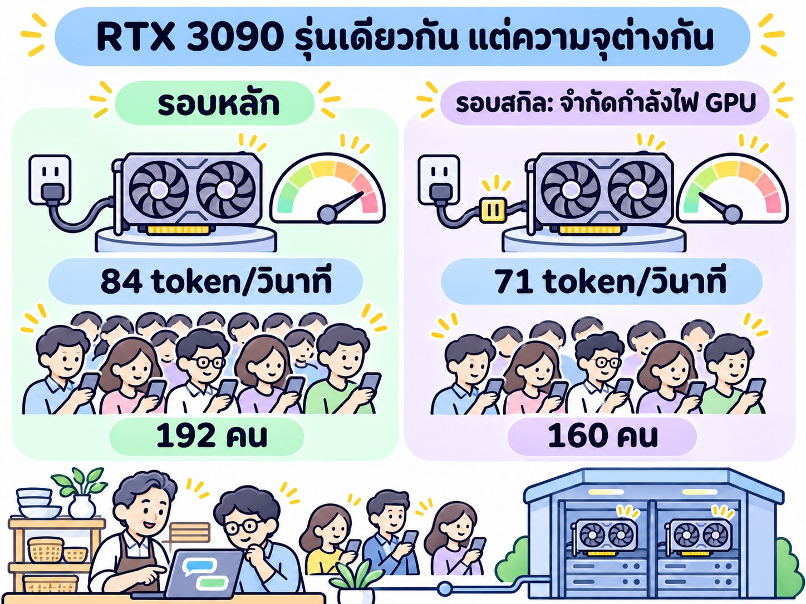
สรุปผลของทั้ง LAB
ผลรวม บทเรียน ข้อจำกัด และสิ่งที่ยังไม่ผ่าน
ผลรวม: Throughput เพิ่มจากราว 82 เป็น 3,097 บน GPU ใบเดิม และ 2 ใบได้สูงสุด 6,261 token/วินาที
เส้นสีน้ำเงินด้านล่างคือแบบทีละคำถาม เส้นสีส้มคือ Continuous Batching 1 ใบ และเส้นสีเขียวคือ 2 ใบหลัง NGINX
ผลสรุปของทั้ง LAB: 2 → 192 → 384 คนตารางหลัก
| จำนวน GPU | สถาปัตยกรรม | รองรับผู้ใช้พร้อมกัน (N) | Throughput ที่ N นั้น (token/วินาที) | TTFT p95 ที่ N นั้น | เท่าของ 1 ใบ | Efficiency |
|---|---|---|---|---|---|---|
| 1 | Baseline: ตอบทีละคำถาม | 2 | 82 | 1.60 วินาที | – | – |
| 1 | Continuous Batching | 192 | 3,097 | 0.23 วินาที | 1.00× | 100% |
| 2 | Continuous Batching × 2 หลัง NGINX least_conn | 384 | 6,157 (สูงสุด 6,261 ที่ N=320) | 0.23 วินาที | 2.00× | 100% |
| 3 | *คำนวณ ไม่ใช่ผลวัด* | *≈ 576* | – | – | – | – |
บทเรียนจากผลจริง (1): วิธีเสิร์ฟสำคัญกว่าตัวเลข GPU utilization
บทเรียนจากผลจริง (2): วิธีแจกงาน ค่ารับส่งข้อมูล และเครื่องที่ใช้จริงมีผลกับคำตอบ
ข้อจำกัด และสิ่งที่ยังไม่ผ่าน
สกิล v0 ยังพลาด 7 จุด และควรแก้ใน v1README
| จุดที่ v0 ยังพลาด | ควรแก้อย่างไรใน v1 |
|---|---|
สกิลไม่บอกว่าคำสั่ง vastai อยู่ที่ไหนใน container คำสั่งแรกจึงล้มด้วย "command not found" AI ต้องหาที่อยู่เอง | ระบุที่อยู่เต็มของคำสั่งไว้ในสกิล |
บน Windows โปรแกรม Git Bash แปลง path ที่ขึ้นต้นด้วย /root/... ผิด ทำให้ล้ม 1 ครั้ง | เตือนเรื่องนี้และวิธีปิดการแปลง path ไว้ในสกิล |
| ชื่อ image ไม่ได้เขียนแบบเต็ม AI ต้องค้นเอง | ใส่ชื่อ image เต็มในตารางค่าเริ่มต้น |
| ไม่มีสคริปต์ "รอจนยิงโหลดเสร็จ" AI เขียนลูปรอเองแล้วผิด 1 ครั้ง | เพิ่มสคริปต์รอผลใน scripts/ |
| ตัวตรวจก่อนวัดดูแค่อุณหภูมิ ไม่ดูเพดานกำลังไฟ เครื่องที่ถูกจำกัดไฟจึงผ่านเกณฑ์ทั้งที่ช้ากว่า 15% | ให้รายงานเพดานกำลังไฟ และเทียบความเร็วผู้ใช้ 1 คนกับค่าอ้างอิง |
| ค่าอ้างอิงในสกิลเป็นตัวเลขเดียว (192 คนต่อใบ) แต่เครื่องอื่นได้ 160 คน | บอกเป็นช่วงที่ขึ้นกับเครื่อง |
ยังไม่มีสคริปต์ดาวน์โหลดโมเดล และสคริปต์สร้างภาพ dataset_samples.png | เพิ่มสคริปต์ทั้งสองใน scripts/ |
LAB 7 · แชทบอท LLM
รายละเอียดเต็มของ LAB นี้: README.md · พรอมต์ทั้ง 9 ขั้น: PROMPTS.md · หน้ารวมของบท: ../README.md